전산응용기계제도기능사 (2002-04-07 기출문제)
1과목: 기계재료 및 요소
1. 원동차의 잇수 28, 종동차의 잇수 84인 한 쌍의 스퍼기어의 속도비(i)는 얼마인가?
- i = 1/3
- i = 1/4
- i = 1/6
- i = 1/8
(정답률: 75%)

2. 다음 중 항온 변태를 통해서만 얻어지는 조직은?
- 트루스타이트(troostite)
- 솔바이트(sorbite)
- 레데브라이트(ledbrite)
- 베이나이트(bainite)
(정답률: 33%)
3. 이 직각 방식에서 모듈이 M=4, 잇수는 72의 헬리컬 기어의 피치원은 몇 ㎜인가? (단, 비틀림각은 30° 이다.)
- 132
- 233
- 333
- 432
(정답률: 38%)
4. 인치계 사다리꼴 나사산의 각도로서 맞는 것은?
- 60°
- 29°
- 30°
- 55°
(정답률: 55%)
5. 편상 흑연주철 중에서 인장강도가 몇 kgf/㎟ 이상인 주철을 고급 주철이라 하는가?
- 5
- 10
- 25
- 50
(정답률: 59%)
6. 절삭공구강의 일종인 고속도강(18-4-1)의 표준성분은?
- Cr18%, W4%, V1%
- V18%, Cr4%, W1%
- W18%, Cr4%, V1%
- W18%, V4%, Cr1%
(정답률: 66%)
7. 훅의 법칙(Hooke's law)이 성립되는 구간은?
- 비례한도
- 탄성한도
- 항복점
- 인장강도
(정답률: 39%)
8. 일반적으로 정밀 공작기계의 밑면이 받는 하중은?
- 압축하중
- 인장하중
- 충격하중
- 비틀림하중
(정답률: 50%)
9. 다음 중 니켈합금과 관계가 없는 것은?
- 문쯔메탈
- 백동
- 콘스탄탄
- 모넬메탈
(정답률: 40%)
10. 자동차의 핸들, 전동기의 축 등에 사용되며 축에 작은 삼각형 키이 홈을 만들어 축과 보스를 고정시키는 것은?
- 스플라인 축
- 페더키이
- 세레이션
- 접선키이
(정답률: 44%)
2과목: 기계가공법 및 안전관리
11. 전동축에서 동력전달 순서가 맞는 것은?
- 주축→중간축→선축
- 선축→중간축→주축
- 선축→주축→중간축
- 주축→선축→중간축
(정답률: 37%)
12. 패킹을 끼워 유체의 누설을 방지하는 리벳 작업의 판 두께는?
- 13㎜이하
- 10㎜이하
- 8㎜이하
- 5㎜이하
(정답률: 32%)
13. 비중 1.74로 실용 금속 중에서 가장 가볍고 비강도가 알루미늄보다 우수하여 항공기, 자동차, 선박, 전기기기, 광학기계 등에 이용되며 구상흑연 주철의 첨가제로 사용되는 것은?
- Ag
- Cu
- Mg
- Sn
(정답률: 62%)
14. 황동에 Pb1.5∼3.0%를 첨가한 합금을 무엇이라고 하는가?
- 톰백
- 강력 황동
- 문쯔 메탈
- 쾌삭 황동
(정답률: 44%)
15. 테이퍼 핀(taper pin)의 호칭 직경으로 바른 것은?
- 핀의 굵은 쪽 직경
- 핀의 가는 쪽 직경
- 핀의 중간 직경
- 핀 길이 1/2지점의 직경
(정답률: 57%)
16. 밀링머신에서 직접 분할법으로 분할이 가능한 분할 수는?
- 12, 8, 6, 3등분
- 28, 16, 8, 6등분
- 24, 16, 8, 3등분
- 24, 14, 12, 6등분
(정답률: 40%)
17. 연삭숫돌에서 결합도의 기호 중 그 호칭이 중간 것에 해당되는 것은?
- E
- H
- L
- P
(정답률: 32%)
18. 접시머리 나사의 머리부를 묻히기 위해 원뿔자리를 만드는 작업은?
- 카운터 싱킹(counter sinking)
- 스폿 페이싱(spot facing)
- 리밍(reaming)
- 카운터 보링(counter boring)
(정답률: 55%)
19. 넓은 평면을 절삭하며 공작물에 직선 운동을 주는 공작기계는?
- 브로칭머신
- 밀링머신
- 플레이너
- 밴드소오
(정답률: 39%)
20. 절삭제의 사용목적 중 틀린 것은?
- 공구의 냉각을 돕는다.
- 공작물의 냉각을 돕는다.
- 공구와 칩의 친화력을 돕는다.
- 가공 표면을 세척한다.
(정답률: 61%)
21. 양 센터로 지지한 시험봉을 다이얼 게이지로 측정을 하였더니 0.04mm 움직였다. 이 때 시험봉의 편심량은 몇 mm인가?
- 0.01
- 0.02
- 0.04
- 0.08
(정답률: 49%)
22. 드릴작업시 주의할 점으로 틀린 것은?
- 작업복과 작업모를 착용한다.
- 칩은 기계를 정지시킨 다음 브러시로 제거한다.
- 드릴작업시에는 보호안경을 쓴다.
- 작은 공작물은 직접 손으로 잡고 작업을 한다.
(정답률: 81%)
23. 공작물과 공구사이의 마찰계수가 클 때의 설명으로 맞지 않는 것은?
- 전단각이 적게되고 칩의 변형에 소요되는 절삭 동력이 크게 된다.
- 칩의 형태는 전단형, 열단형, 균열형칩이 되기 쉽다.
- 공구에 작용하는 압력이 작게되어 구성인선을 방지한다.
- 절삭 온도가 높게되어 공구의 수명이 짧아진다.
(정답률: 63%)
24. 공작기계의 구비 조건중 적당하지 않는 것은?
- 절삭 가공의 능률이 좋을 것
- 동력손실이 크고 치수 정밀도가 좋을 것
- 조작이 용이하고 안전성이 높을 것
- 기계의 강성이 높을 것
(정답률: 71%)
25. 래핑(lapping)가공의 장점 설명 중 틀린 것은?
- 가공면이 매끈한 거울면을 얻을 수 있다.
- 정밀도가 높은 제품을 만들 수 있다.
- 가공된 면은 내식성, 내마모성이 좋다.
- 가공된 표면의 경도가 높다.
(정답률: 47%)
3과목: 기계제도
26. x, y 좌표계(절대좌표)에서 (6,5)의 위치를 극좌표계로 표현한 것은?
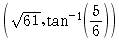
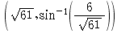
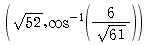
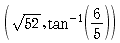
(정답률: 41%)
27. 다음 중 표면거칠기 측정법이 아닌 것은?
- 중심선 평균 거칠기
- 최대 높이
- 10점 평균 거칠기
- 평균 면적 거칠기
(정답률: 38%)
28. 다음 선의 종류 중에서 특수한 가공을 하는 부분 등 특별한 요구사항을 적용할 범위를 나타내는 선은?
- 굵은 실선
- 가는 실선
- 가는 1점쇄선
- 굵은 1점쇄선
(정답률: 66%)
29. 치수선의 양끝에 사용되는 끝부분 기호가 아닌 것은?
- 화살표
- 기점기호
- 사선
- 검정 동그라미
(정답률: 39%)
30. 코일 스프링의 중간 부분을 생략할 때에 생략한 부분을 표시하는 선은?
- 가는 실선
- 굵은 실선
- 가는 1점쇄선
- 파단선
(정답률: 39%)
31. 그림과 같이 부품의 일부를 도시하는 것으로 충분한 경우에는 그 필요 부분만을 표시할 수 있는 투상도는?
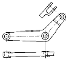
- 회전 투상도
- 부분 투상도
- 국부 투상도
- 요점 투상도
(정답률: 63%)
32. 축, 구멍의 치수에 따라 틈새 또는 죔새가 생기는 끼워맞춤은 무슨 끼워맞춤인가?
- 억지 끼워맞춤
- 헐거운 끼워맞춤
- 중간 끼워맞춤
- 공차 끼워맞춤
(정답률: 42%)
33. 끼워맞춤에서 IT기본공차의 등급이 커질 때 공차값은? (단, 기타 조건은 일정함)
- 작아진다
- 커진다
- 일정하다
- 관계없다
(정답률: 57%)
34. CAD 시스템의 도입으로 나타나는 일반적인 공통효과라고 볼 수 없는 것은?
- 제품의 생산성 향상
- 제품의 표준화
- 제품의 품질향상
- 제품원가의 증가
(정답률: 79%)
35. 도면에 기입하는 재료기호 중 "SM40C"를 정확히 설명한것은?
- 기계 구조용 탄소강재로 인장강도가 40kgf/㎟ 이다.
- 기계 구조용 탄소강재로 탄소함량이 0.40% 이다.
- 몰리브덴강으로 인장강도가 40kgf/㎟ 이다.
- 몰리브덴강으로 탄소함량이 0.40% 이다.
(정답률: 59%)
36. 플로터(plotter)의 출력속도를 나타내는 단위는?
- BPS(bit per second)
- CPS(character per second)
- IPS(inch per second)
- BPI(byte per inch)
(정답률: 32%)
37. CAD 시스템에서 3차원 모델링 중 솔리드(solid) 모델링의 특징으로 틀린 것은?
- 데이터의 구성이 간단하다.
- 데이터의 메모리량이 많다.
- 정확한 형상을 파악할 수 있다.
- 물리적 성질의 계산이 가능하다.
(정답률: 53%)
38. CAD제도에 사용하는 선의 종류를 나열하였다. 모양에 따른 선의 종류에 속하지 않는 것은?
- 실선
- 파선
- 1점쇄선
- 절단선
(정답률: 50%)
39. 다음 명령어 중 드로잉(drawing)명령과 관련이 가장 적은 명령어는?
- line
- arc
- break
- point
(정답률: 54%)
40. 퍼스널 컴퓨터를 이용한 CAD시스템에 필수적으로 장착되는 것으로 계산에 관한 작업만을 실행함으로써 데이터의 정확성과 자료의 처리범위 및 자료의 처리속도를 빨리할 수 있는 것은?
- RAM
- cache memory
- ROM
- Coprocessor
(정답률: 26%)
41. 다음 기호 중 안전 밸브를 나타낸 것은?
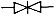
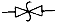
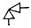
(정답률: 39%)
42. 도면을 접을 때 그 크기의 기준은 얼마로 하여야 하는가?
- A1(594×841)
- A2(420×594)
- A3(297×420)
- A4(210×297)
(정답률: 60%)
43. 기어의 도시방법에 관한 내용 중 적합하지 않은 것은?
- 이끝원은 굵은 실선으로 그린다.
- 피치원은 가는 1점쇄선으로 그린다.
- 이뿌리원은 파선으로 그린다.
- 맞물리는 한쌍의 기어의 이끝원은 굵은 실선으로 그린다.
(정답률: 71%)
44. 다음은 볼트를 제도 한 것이다. 바르게 나타 낸 것은?
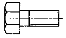
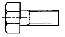
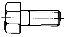
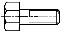
(정답률: 38%)
45. 다음 중 치수 기입요소가 아닌 것은?
- 치수선
- 치수 보조선
- 화살표
- 치수 경계선
(정답률: 63%)
46. 다음의 특수 투상법 중 물체의 형상을 그대로 그리면 복잡하고 이해하는데 지장이 있는 경우에 간략하게 작도하는 방법은?
- 관용투상도
- 부분투상도
- 보조투상도
- 회전투상도
(정답률: 38%)
47. 다음은 단면표시법이다. 틀린 것은?
- 단면은 원칙적으로 기본중심선에서 절단한 면으로 표시한다. 이 때 절단선은 반드시 기입하여 준다.
- 단면은 필요한 경우에는 기본중심선이 아닌 곳에서 절단한 면으로 표시해도 좋다. 단, 이 때에는 절단 위치를 표시해 놓아야 한다.
- 숨은선은 단면에 되도록 기입하지 않는다
- 관련도는 단면을 그리기 위하여 제거했다고 가정한 부분도 그린다
(정답률: 21%)
48. 다음은 육각볼트의 호칭이다. ③이 의미하는 것은?
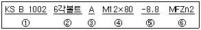
- 강도
- 부품등급
- 종류
- 규격번호
(정답률: 62%)
49. 축의 도시법에 대한 설명 중 틀린 것은?
- 속이 찬 축은 길이 방향으로 단면 도시한다.
- 긴 축은 중간을 파단하여 짧게 그리고 치수는 실제 치수를 기입한다.
- 축에 빗줄 널링은 축선에 대하여 30° 로 엇갈리게 그린다.
- 축에 키 홈은 부분 단면하여 나타낼 수 있다.
(정답률: 57%)
50. 단면도에서 해칭에 관한 설명 중 틀린 것은?
- 해칭은 주된 중심선에 대하여 45° 로 가는실선을 사용하여 등간격으로 표시한다.
- 2개 이상의 부품이 인접한 경우 단면의 해칭은 방향이나 간격을 다르게 한다.
- 해칭을 하는 부분안에 글자나 기호를 기입하기 위해서는 해칭을 중단할 수 있다.
- 해칭은 굵은 실선으로 하는 것을 원칙으로 하되 혼동의 우려가 없을 경우는 생략한다.
(정답률: 60%)
51. 면의 지시기호에 대한 표시위치 설명이 틀린 것은?
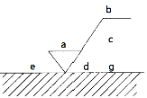
- a : 중심선 평균 거칠기의 값
- b : 가공방법
- c : 컷오프값
- d : a 이외의 표면거칠기의 값
(정답률: 63%)
52. 다음 용접기호의 설명으로 옳은 것은?
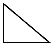
- 필렛 용접
- 점 용접
- 플러그 용접
- 현장 용접
(정답률: 73%)
53. 모듈이 2, 잇수가 30인 표준 기어의 이끝원의 지름은 얼마인가?
- 56
- 60
- 64
- 68
(정답률: 49%)
54. CAD시스템의 입력 장치가 아닌 것은?
- 키보드
- 라이트 펜
- 플로터
- 마우스
(정답률: 78%)
55. 3차원 모델링에서 물체의 외부 형상 뿐 만 아니라 내부구조까지도 표현이 가능하고 모형의 체적, 무게 중심, 관성 모멘트 등의 물리적 성질까지 제공 할 수 있는 모델링은?
- 와이어 프레임 모델링
- 서피스 모델링
- 솔리드 모델링
- 아이소메트릭 모델링
(정답률: 68%)
56. 그림과 같은 단면도를 무슨 단면도라 하는가?
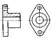
- 회전 단면도
- 부분 단면도
- 한쪽 단면도
- 전 단면도
(정답률: 50%)
57. 다음 그림에서 기하공차의 해석으로 맞는 것은?
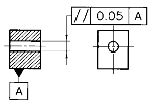
- 데이텀 A를 기준으로 0.⑤㎜ 이내로 평면이어야 한다.
- 데이텀 A를 기준으로 0.⑤㎜ 이내로 평행해야 한다.
- 데이텀 A를 기준으로 0.⑤㎜ 이내로 직각이 되어야 한다.
- 데이텀 A를 기준으로 0.⑤㎜ 이내로 대칭이어야 한다.
(정답률: 77%)
58. CAD의 장점으로 볼 수 없는 것은?
- 설계자의 생산성을 높일 수 있다.
- 고도의 설계기능 기술이 필요하다.
- 의사 전달을 용이하게 할 수 있다.
- 제품제조의 데이터 베이스를 구축 할 수 있다.
(정답률: 64%)
59. 아래 그림과 같은 키의 종류는?
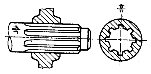
- 세레이션
- 묻힘 키
- 안장 키
- 스플라인
(정답률: 62%)
60. 배관도의 치수기입 방법에 대한 설명이다. 틀린 것은?
- 파이프나 밸브 등의 호칭 지름은 파이프라인 밖으로 지시선을 끌어내어 표시한다.
- 치수는 파이프, 파이프 이음, 밸브의 목 입구의 중심에서 중심까지의 길이로 표시한다.
- 여러 가지 크기의 많은 파이프가 근접에서 설치된 장치에서는 단선도시 방법으로 그린다.
- 파이프의 끝부분에 나사가 없거나 왼나사를 필요로 할 때에는 지시선으로 나타내어 표시한다.
(정답률: 42%)